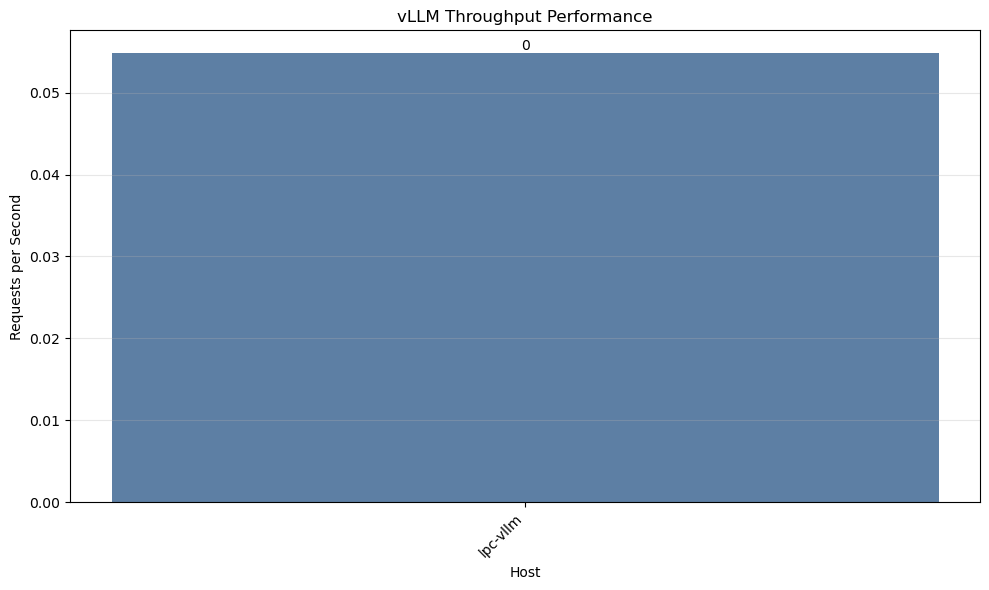
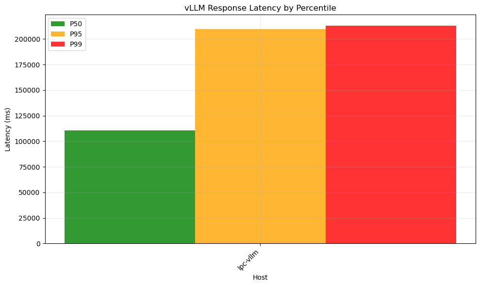

üöÄ vLLM Benchmark Results Report
Generated: 2025-10-02 17:07:22
üìä Summary Statistics
110835.1ms
Avg P50 Latency
209477.5ms
Avg P95 Latency
213087.4ms
Avg P99 Latency
üñ•Ô∏è Test Environment Details
| Host |
Distribution |
Kernel |
CPUs |
Memory (MB) |
Virtualization |
Test Date |
| lpc-vllm |
Debian 13.1 |
6.12.41+deb13-amd64 |
1 |
64,283 |
kvm |
2025-10-02T17:37:51Z |
üìà Performance Results
| Host |
Total Requests |
Successful |
Failed |
Requests/Sec |
P50 (ms) |
P95 (ms) |
P99 (ms) |
Mean (ms) |
| lpc-vllm |
100 |
100 |
0 |
0.1 |
110835.1 |
209477.5 |
213087.4 |
113858.2 |
üìä Performance Visualizations
Throughput Comparison

Latency Distribution

Success Rate Overview